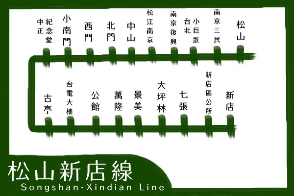

松山新店線
- 瓦沙娘惹
- Mama thai 11
- 加爾各答印度料理
- 吧生仔碌碌
- 泰曼街邊料理
【各式異國料理餐廳推薦】
松山新店線
台北小巨蛋站
瓦沙娘惹
Malaysian cuisine
新馬料理餐廳
- 地址：台北市松山區民生東路四段56巷1弄2號
- 訂位電話：02-2715-3383
- 營業時間：11:00~14:30；17:00~20:30；星期三11:00~14:30；假日休息
- 交通：由捷運台北小巨蛋站步行約10分鐘可抵達
必吃菜單
松山新店線
西門站
加爾各答印度料理
Indian cuisine
印度料理餐廳
- 地址：台北市萬華區西寧南路70號B1
- 訂位電話：02-2389-3878
- 營業時間：11:30~14:00，17:00~21:30
- 交通：由捷運西門站步行約4分鐘可抵達
必吃菜單
松山新店線
公館站
吧生仔碌碌
Malaysian cuisine
新馬料理餐廳
- 地址：台北市中正區羅斯福路三段284巷13號1樓
- 訂位電話：02-2368-3505
- 營業時間：11:30~15:00；17:00~20:30星期一休息
- 交通：由捷運公館站步行約4分鐘可抵達
松山新店線
七張站
泰曼街邊料理
Thai Cuisine
泰式料理餐廳
- 地址：新北市新店區北新路二段97巷2號
- 訂位電話：02-2912-7891
- 營業時間：11:45~14:30；17:45~21:00；假日11:30–14:30, 17:30–21:00；星期二休息
- 交通：由捷運七張站步行約2分鐘可抵達